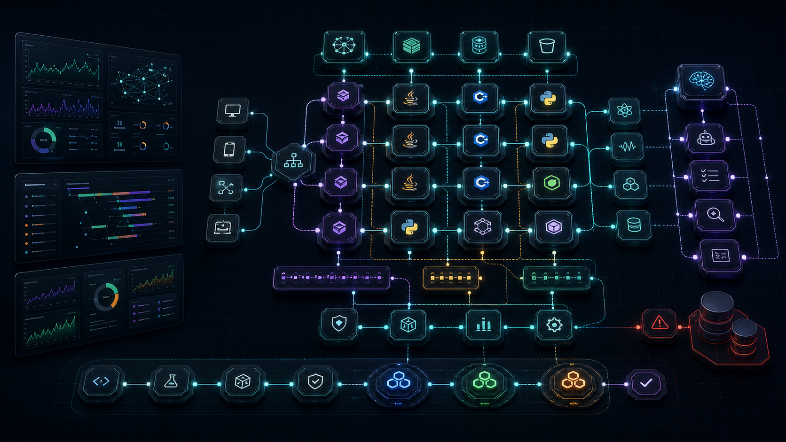

less recruiter operational toil
Backend systems / cloud services / operational excellence
Own the service. Shrink the blast radius. Keep customers moving.
I build large-scale backend systems in Java, C++, and Python with the habits that make services dependable: clear design, observable operations, resilient retries, CI/CD discipline, and customer-first tradeoffs.
Current focus

service ownership
retries + observability
agent guardrails
page-load latency reduction
availability on enterprise systems
faster prototyping and validation
Service ownership
Reliable systems come from design decisions that survive production.
I enjoy the work after the first implementation: defining the contract, testing the failure paths, tracing customer impact, and leaving the next engineer with a system that explains itself.
Start with the customer path
Requirements become APIs, SLOs, test cases, and readable tradeoffs before code turns into ownership.
Engineer the unhappy path
Retries, dead letters, alerts, fallback behavior, and rollback plans are part of the actual feature.
Keep the system learnable
Documentation, dashboards, code reviews, and mentoring make services easier to extend under pressure.
Engineering texture
I like systems where rigor and curiosity compound.
The most satisfying work is turning ambiguity into a reliable service: asking what the customer needs, choosing a design that scales, using GenAI carefully to speed up validation, then proving the service works when traffic, dependencies, and edge cases get messy.
Separate contracts, domain logic, data access, and operations so each layer has a clear reason to change.
Profiles, traces, dashboards, and tests make performance work concrete instead of theatrical.
Build systems, scripts, and agentic workflows that reduce toil while keeping control paths explicit.
Experience
Backend ownership, distributed systems, GenAI platforms, and operational discipline.
Projects
Evidence across backend depth, agentic systems, cloud, and low-level fundamentals.
Contact
Ready to build services that stay understandable at scale.
I am interested in backend platforms where system design, operational excellence, customer impact, and responsible AI tooling all meet in production.